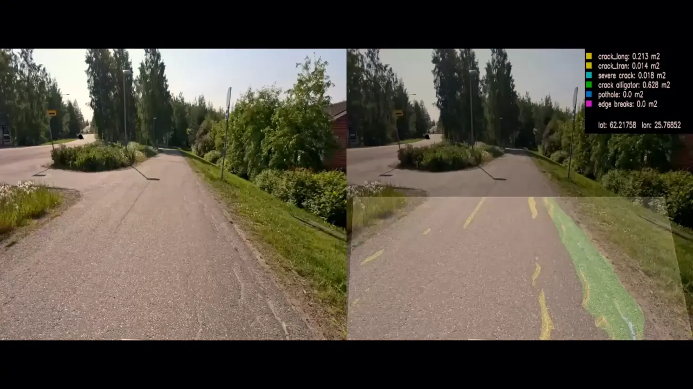
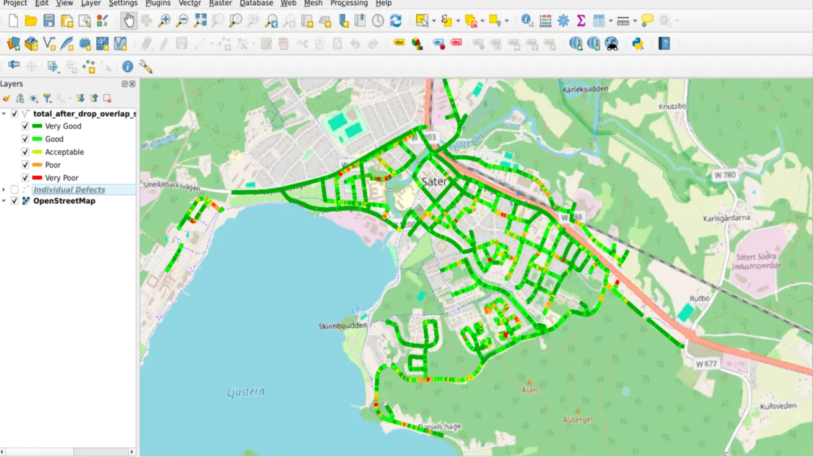
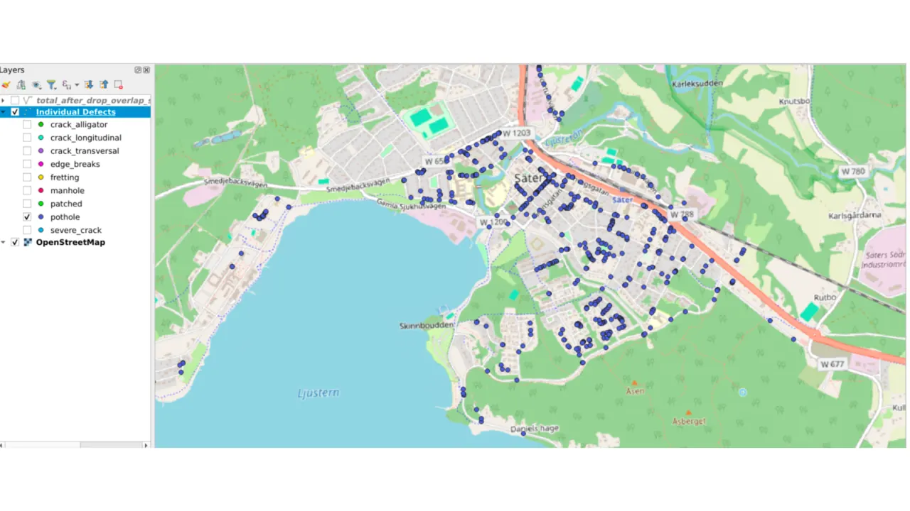
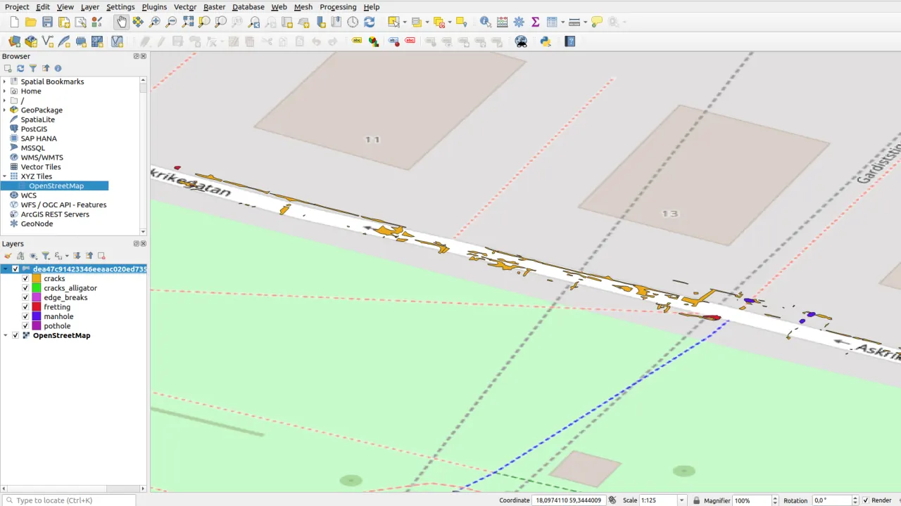
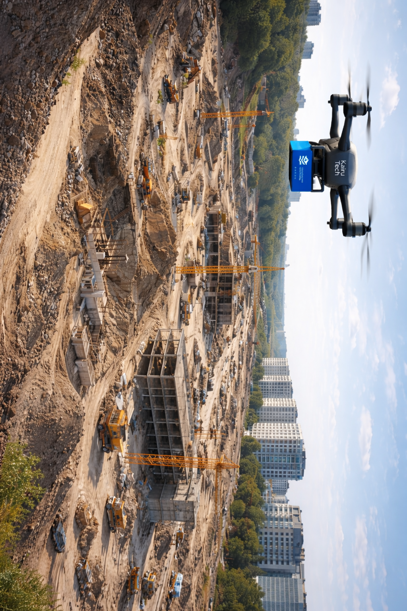

1
Recogida de vídeo
El análisis puede realizarse con vídeos grabados desde vehículo, cámara portátil o smartphone, sin necesidad de equipamiento complejo.
Solución basada en inteligencia artificial y análisis inteligente de vídeo para detectar, clasificar, medir y geolocalizar defectos de carretera y activos viarios a partir de grabaciones existentes o nuevas campañas de inspección.
Enfoque pensado para apoyar conservación, mantenimiento, inventario, planificación y seguimiento objetivo de la red viaria.
Un proceso sencillo: grabar, procesar y consultar resultados en formatos útiles para análisis, planificación y reporting.
El análisis puede realizarse con vídeos grabados desde vehículo, cámara portátil o smartphone, sin necesidad de equipamiento complejo.
El sistema analiza las secuencias, detecta objetos y defectos, clasifica incidencias y mide tamaño y posición.
Los resultados se entregan como datos geolocalizados, imágenes segmentadas y formatos compatibles con sistemas GIS.
La solución ayuda a pasar de inspecciones dispersas o revisiones manuales a una base digital comparable, trazable y útil para planificar actuaciones.
La solución combina visión artificial, geolocalización y formatos interoperables para facilitar el análisis del estado de la infraestructura.
Identifica grietas longitudinales y transversales, baches, roturas de borde, desgaste del firme y otros deterioros.
Clasifica los defectos detectados y calcula el área afectada para apoyar planificación, materiales y costes.
Sitúa incidencias y activos sobre la red, facilitando su visualización y seguimiento posterior.
Permite registrar señales, marcas viales, tapas, bordillos, anchura de vía y otros activos de carretera.
Entrega datos en formatos como CSV o ESRI shapefile, preparados para sistemas de información geográfica.
Trata el vídeo con criterios de privacidad, reduciendo la presencia de personas, vehículos u otros elementos identificables en los resultados finales.
Visualizaciones orientadas a facilitar análisis técnico, revisión de incidencias, inventario e integración con herramientas existentes.

Identificación visual de defectos y elementos relevantes directamente sobre la grabación.

Representación geográfica para comparar tramos, priorizar actuaciones y revisar cobertura.

Geolocalización de incidencias concretas para seguimiento y análisis posterior.

Consulta de datos asociados a cada segmento o defecto, incluyendo imagen y mediciones.

Uso de material visual para reconstruir y analizar el contexto de la vía.
Transformación del material grabado en información estructurada para análisis técnico.
Una base de información más consistente para equipos responsables de conservación, mantenimiento y gestión de infraestructura.
| Área | Valor potencial |
|---|---|
| Inspección | Recogida de datos más eficiente en coste y tiempo, con menor dependencia de revisión manual. |
| Mantenimiento | Priorización de actuaciones basada en defectos detectados, medicidos y geolocalizados. |
| Planificación | Seguimiento de tendencias año a año para apoyar planes de conservación y previsión presupuestaria. |
| Inventario | Digitalización de activos viarios como señales, marcas, bordillos, tapas o anchura de vía. |
| Integración | Resultados exportables a formatos interoperables para sistemas GIS o herramientas internas. |
| Reporting | Resultados repetibles y comparables para seguimiento objetivo, control de evolución y comunicación entre equipos. |
Descarga la información de la solución para revisarla con más detalle.